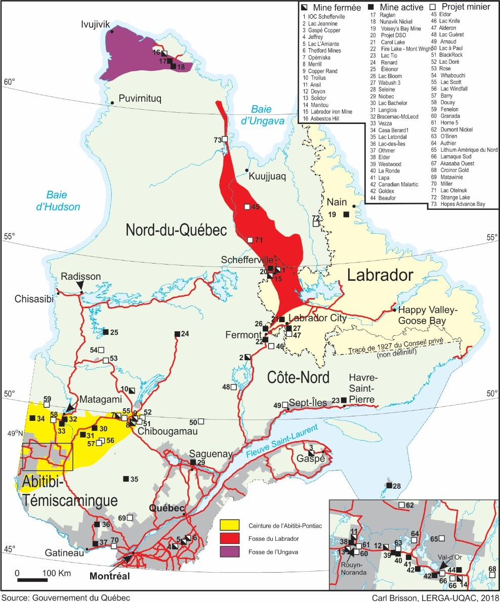
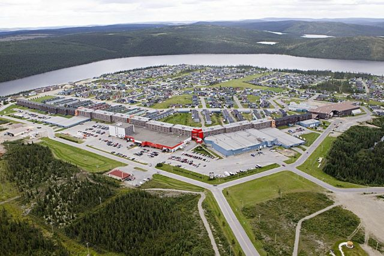
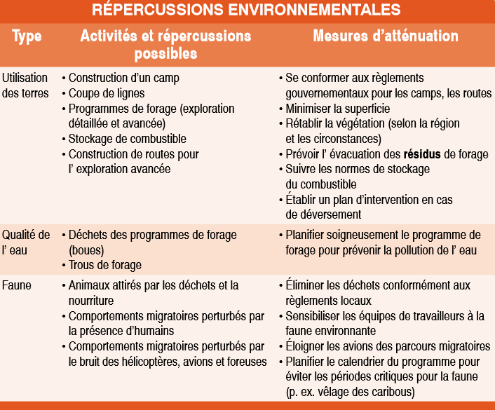

Comme expliqué dans
l’introduction, l’exploitation minière est une activité ancienne et déjà
pratiquée, même si de façon minime, par les autochtones avant l’arrivée des
colons européens. Ce secteur servira ensuite au développement du pays, tout au
long de l’histoire du Canada et encore aujourd’hui. Par exemple lors de l’après
Seconde Guerre mondiale pendant laquelle l’industrie minière est en pleine
effervescence, notamment en ce qui concerne l’exploitation de fer, qui voit la
création de mines, villes minières, diverses infrastructures telles que, par
exemple, des voies ferrées et des usines de traitement primaire. Ceci dans le
but de fournir les industries manufacturières situées principalement au
pourtour des Grands Lacs canado-américains, mais perdra en importance lors de
l’arrêt et la fermeture des usines. La grande difficulté du secteur minier est
qu’il est très sensible à l’évolution du cours des minerais en bourse, créant
ainsi une incertitude pour l’avenir avec laquelle les entreprises
d’exploitations minières ont dû apprendre à être confrontées et à savoir
s’adapter.
1) L’exploitation minière. Les apports à l’économie canadienne
Avec la perte de vitesse de
l’économie secondaire et la prise d’importance de l’économie tertiaire, nous
aurions pu penser que l’économie primaire, qui est intrinsèquement liée à
l’économie secondaire, surtout par l’exploitation minière dont la production
sert à alimenter les usines, aurait suivi cette tendance et aurait
progressivement été abandonnée au Canada. Sauf que cela n’est pas le cas,
depuis deux décennies l’industrie minière connaît de nombreux investissements
et développements. Cela est probablement dû au développement des technologies
et de la croissance de la Chine qui stimule la demande en matière première, en
effet, ces nouvelles technologies sont très demandeuses en minerais et le
Canada possède un sous-sol très riche avec l’exploitation de plus de 60
minéraux et métaux, le Canada est le plus grand pays minier du monde. Ces
minéraux et métaux se retrouvent dans plusieurs types de produits courants,
tels que les ordinateurs, les téléphones intelligents, les véhicules, les
bâtiments, etc… Le secteur minier ne peut donc théoriquement pas disparaître,
il est bien trop important pour l’industrie mondiale. De plus, le développement
de ces nouvelles technologies, évoquées plus tôt, n’est pas encore terminé, il
s’agit d’un marché encore en croissance et le développement progressif des pays
africains et d’Asie, principalement la Chine et l’Inde, pourrait bien faire
exploser la demande dans ces nouvelles technologies, entraînant un effet domino
sur la demande en matières premières, ce qui aurait probablement un impact très
fort sur l’industrie minière canadienne.
En 2017,
la production des quelques 200 mines et 7000 carrières du Canada avaient permis
l’extraction de minerais d’une valeur de plus de 47 milliards de dollars, ce
qui représente 3,4 % du produit intérieur brut du pays et représentait à
lui seul 19 % de ses exportations, ce qui permet de mettre en avant
l’importance de la vente des minerais extraient dans le sous-sol canadien pour
l’étranger.Comme
nous pouvons le constater sur le graphique à droite, une grande part des minerais et métaux que le Canada
exporte sont à destination du continent américain, mais avec le développement
de l’Asie et de l’Afrique, cela est susceptible d’évoluer et d’autres pays
pourraient devenir les principaux clients du Canada.
Cela peut sembler peu, mais durant la période d’après-guerre, la valeur
du secteur minier passe de 400 millions à 5 milliards de dollars en 1975, elle
atteint une valeur de 21,7 milliards de dollars en 2004 et enfin, comme nous
l’avons dit plus haut, 47 milliards de dollars en 2017, ceci montre le rapide
développement qu’a connu le secteur minier au cours des dernières années au
Canada. On peut également comptabiliser environ 380 000 travailleurs
directs (concerne autant ceux travaillant dans les mines que ceux dans les
fonderies par exemple), comparé à la population totale canadienne qui est d’environ
37 millions d’individus, cela représente environ 1 % de la population
totale du pays qui travaillerait dans le secteur minier.
Il ne
faut cependant pas oublier les emplois générés indirectement par l’industrie
minière et leurs apports à l’économie, ceux qui travaillent dans ce secteur ont
après tout besoin de se loger, se nourrir, se vêtir, se divertir, etc. De plus,
lorsqu’une nouvelle mine est créée, une ville l’est également à proximité,
celle-ci ayant pour but de loger les ouvriers de la mine, néanmoins, toutes les
activités précédemment citées vont également s’y créer et donc générer de
l’emploi, la création de ces villes en elle-même est également bénéfique aux
entreprises de BTP, tout comme les infrastructures nécessaires pour agrandir le
réseau électrique, routier, ferroviaire, etc. Tout ceci entraînant un
développement du pays, nous pourrions également aller plus loin en disant que
les personnes liées à ces emplois indirects ont également les mêmes besoins,
pouvant créer ainsi une sorte d’effet domino, mais cela reste difficile à
analyser. Concernant ces emplois indirects, nous manquons bien évidemment de
chiffres, nos différentes sources les prenant en compte nous annonçant pour
certains des chiffres équivalents à plus du double des employés du secteur
minier, alors que d’autres seulement la moitié, devant de telles disparités,
nous préférons donc nous abstenir de les comptabiliser.
Malgré la richesse de son sous-sol, la répartition des ressources minières du Canada sont inégalement répartis sur le territoire et cela, que ce soit en termes de quantité que de types de minerais exploitables, par exemple, sur les 47 milliards de dollars que vaut la production de l’industrie minière au Canada, 10,8 milliards sont générés en Ontario, ce qui représente presque environ 23 % de la valeur de la production de l’industrie minière du pays, quant au Québec, avec la valeur de sa production qui équivaut à 9,2 milliards de dollars, la province génère environ 20 % de la valeur de la production de l’industrie minière du Canada. Nous pouvons donc observer que les provinces d’Ontario et de Québec génèrent à elles seules environ 43 % du PIB généré par le secteur minier au Canada, deux provinces sur les dix, plus trois territoires, du pays, ceci présente en effet ce que nous évoquions plus haut, la grande disparité des ressources minières sur le territoire canadien. Cette carte nous montre que les provinces qui bénéficient le plus du secteur minier sont l’Ontario, le Québec et la Colombie-Britannique, mais dans ce cas-là, nous pouvons voir que ce qui fait la richesse de ces provinces est opposé, lorsque par exemple en Ontario, c’est les minéraux métalliques qui sont principalement extraits, alors qu’en Colombie-Britannique c’est le charbon et les minéraux non métalliques
Carte de la valeur de la production minérale par province et territoire, en 2017, et en 2018. Sources : Gouvernement du Canada
2) Le Québec et Fermont, deux exemples réussis de développement minier
Afin de pouvoir présenter de façon plus précise le développement et les retombées économiques induits par l’exploitation minière, nous allons étudier deux exemples, à deux échelles différentes. Tout d’abord il s’agira de l’exploitation minière au sein de la province de Québec une des principales provinces minière canadienne, puis nous analyserons l’exemple de la ville de Fermont, elle aussi située au Québec.
2.a Le Québec, un vaste territoire riche en minerais
Le Québec possède un territoire de plus de 1,5 million de km² et la grande majorité de ceterritoire est située sur le « Bouclier canadien », une région riche en termes de minerais. Comme nous pouvons le constater sur cette carte, l’emplacement des sites d’extraction minière sont inégalement répartis sur le territoire, on peut également constater qu’un nombre relativement important de ces sites, même s’ils ne sont qu’à l’état de projet pour certains, se situe dans la ceinture de l’Abitibi-Pontiac (aussi appelée faille de Cadillac) et les fosses du Labrador et de l’Ungava, il s’agit de secteurs prédisposés par la nature relativement riche en ressource du sous-sol. Nous pouvons également constater que les liaisons terrestres qui s’aventurent dans le nord ont pour objectif de relier ces sites miniers et les villes minières associées, ou alors des ports afin de les connecter, montrant une nouvelle fois l’extension des réseaux et donc de la connexion à l’ensemble du territoire grâce au secteur minier. Nous retrouvons donc des gisements de zinc, de nickel, de cuivre, d’argent, de fer, d’or, etc. Le développement de l’exploitation minière ayant suivi la fin de la Seconde Guerre mondiale a été d’une grande importance pour le Québec, jusqu’à l’effondrement partiel du secteur suite à la fermeture progressive des usines, notamment autour des Grands Lacs. L’industrie minière au Québec connaît un sursaut en 1990 suite à d’importants investissements visant l’implantation d’une mine de nickel et de cuivre dans le Nord de la province, cependant, il fallut attendre la fin des années 2000 pour que la croissance l’activité minière reprenne au Québec, on a pu y voir l’extension de mine existante, la création de nouvelles, mais également la diversification des ressources exploitées. Cela concorde avec la propagation des nouvelles technologies, celles-ci nécessitant des minerais divers, tels que les Terres rares.
En 2018, on dénombre 24 mines en activités et une trentaine de projets miniers (11 mines d’or, 2 mines de fer, 2 mines de nickel-cuivre, 2 mines de zinc-cuivre, 1 mine d’ilménite, 1 mine de diamants, 1 mine de sel, 1 mine de niobium, 1 mine de mica, 1 mine de graphite et 1 mine de feldspath). Il ne faut pas oublier les mines fermées qui sont une quinzaine, ceci probablement dû à l’instabilité des marchés de l’industrie minière, cependant, ces mines sont également susceptibles de rouvrir en fonction des fluctuations de la bourse. Les revenus associés à la production minière du Québec constituent 2,3 % du produit intérieur brut (PIB) de la province. Tous les minerais n’ont pas la même valeur et la quantité extraite est également différente.
Nous
pouvons constater sur ce tableau que la quantité de minerais extraite est très
variable en fonction du type de minerai dont il s’agit, mais on voit également
la forte dominance du fer en termes de quantité produite, mais également la
grande disparité en termes de valeur des minerais. Comme nous pouvons le
constater, le Fer est le minerai extrait dans la plus grande quantité, mais
n’est que second en termes de valeur de cette quantité de minerai, le premier
étant l’Or, qui est pourtant extrait dans la plus petite quantité. Tous ces
minerais possèdent des valeurs pour une seule tonne très différente, les
rendant ainsi tous intéressants à l’exploitation. En ce qui concerne les emplois,
on peut dénombrer environ 14 000 personnes travaillant dans l’extraction
minière de façon directe, le nombre d’emplois indirects générés atteint
également très probablement le double de ce chiffre. En conclusion, le secteur
minier au Québec revet d’une importance, son apport à l’économie de façon
directe et indirecte n’est pas vraiment négligeable, de plus, au Québec un
grand nombre de minerais « communs » sont exploités, permettant ainsi
une forme de protection de ce marché. Ces minerais étant presque indispensable
aux sociétés modernes (exemple : le fer).
Mais ce n’est pas tout, des minerais plus rares, dont l’utilisation s’est développés principalement grâce aux nouvelles technologies et également présent, permettant ainsi un développement du secteur minier et possiblement un monopole de la production, ou du moins, une dominance sur le marché, de l’exploitation de ces minerais, ce qui serait bénéfique pour les finances de l’entreprise se chargeant de leur exploitation, mais également pour l’économie de la province.
2.b Fermont, la réussite d’une ville minière
 Fondée en 1972 par des investissements privés, la ville de Fermont a été
créée suite à la croissance des marchés de matières premières et notamment
celles liées à l’exploitation minière. L’environnement difficile et froid
au-dessus du 50° parallèle n’a cependant pas empêché son développement et son
architecture a donc été faite en prenant
en considération ces difficultés, notamment son « murs-écran », une
mégastructure de 1300 mètres en forme de « V » dont le rôle est de
barrer la route aux vents dominants afin de réguler la température au sein de
la ville, ceci est efficace sur une distance de 375 mètres, ce qui correspond à
66 % du territoire de la ville. Fermont
est une ville minière qui sert pour le
logement des employés de deux mines, le site du Mont Wright et le site du Lac
Bloom, ces deux sites exploitent du minerai de fer, la ville est principalement
financée par des capitaux privés, ceux des entreprises exploitant les mines à
proximité. La base économique des villes minières comme Fermont est
l’écoulement des matières premières qui sont exploitées, la ville reflète donc
en partie le bon (ou le mauvais) fonctionnement des mines à proximité de
celle-ci. Certaines de ces villes développent tout de même des activités
annexes, comme l’exploitation forestière par exemple. Il existe plusieurs
moyens d’atteindre Fermont depuis le reste du pays, il existe une liaison
routière, une ferroviaire et enfin une dernière par avion, cependant, le train
est généralement réservé au transport du minerai.
Photo Fermont CC niagara-pauls
En 2011 la ville comptait environ 2 800 habitants, cette population est relativement jeune et possède un niveau de revenus élevé comparé à celui de la moyenne des ménages québécois, 98 845 $ contre 59 954 $, ceci est dû aux salaires avantageux versés par les entreprises minières les employant et à la quasi-absence de personne au chômage. Ces entreprises ne souhaitent pas perdre leurs employés, car un employé représente un investissement pour une entreprise lorsque celui-ci est formé et le départ de celui-ci sans avoir rentabilisé la formation qu’il a subie est une perte financière pour l’entreprise, de plus, il doit falloir réussir à attirer des ouvriers dans un territoire aussi contraignant, ces deux paramètres doivent expliquer pourquoi ces salaires sont si élevés. Les villes comme Fermont possèdent un rôle de front pionnier, permettant le développement des territoires « sauvages ». Néanmoins, comme déjà dit plus haut, le développement de Fermont est dépendant des mines environnantes et si au début des années 2000 le développement de la ville était très faible à cause du faible coût du minerai de fer en bourse, la remontée de celui-ci une décennie plus tard à permit de relancer fortement le développement de la ville, obligeant d’ailleurs de modifier sa configuration afin de pouvoir accueillir tous les nouveaux habitants. Malgré tout, le domaine socioculturel de Fermont est relativement bien développé, on y trouve un nombre assez important (pour la taille de la communauté) d’organismes sportifs, culturels ou scientifiques, il existe également une radio communautaire et un journal local, de plus, depuis 2011 un festival d’hiver a lieu chaque année, ceci démontre en partie que les habitants de Fermont, cette ville crée de toute pièce pour un seul objectif, ont réussi à commencer à se constituer une sorte de culture et de traditions, ce qui peut résulter en un attachement au territoire. La création du fly-in/fly-out qui devient peu à peu la norme pour les entreprises pourrait mettre fin à l’émergence de villes minières, car celui-ci est moins contraignant financièrement, ce phénomène correspond à l’utilisation de travailleurs mobiles par les entreprises, c’est-à-dire que les ouvriers ne sont plus logés de manières permanentes à proximité des mines, mais temporaires à raison de cycle de 7,10 ou 14 jours, pour effectuer ces cycles, les sites sont souvent reliés avec le reste du pays par des liaisons aériennes, ce qui est le moyen de transport le plus rapide.
L’exploitation
minière au Canada apporte des revenus non négligeables au pays, en effet,
l’activité minière en elle-même permet de généré des revenus relativement
importants en répondant aux besoins en matières premières des entreprises du
pays ou en exportant cette production minière ou encore via les redevances
minières des entreprises envers les gouvernements provinciaux, ce plus les
salaires, plutôt confortable que peuvent recevoir les employés des compagnies
minières permettent encore d’augmenter les richesses du pays, car ces salaires
vont être dépensés afin de se loger, se vêtir, se nourrir, ce divertir, etc,
permettant la création d’emplois indirectement provoquée par l’exploitation
minière. Et comme nous avons pu le constater, la province de Québec et la ville
de Fermont sont deux exemples de développement territorial réussi grâce à
l’exploitation minière.
3) Réglementation et apport du secteur minier sur le plan social et environnemental
L’exploitation minière possède également un grand impact sur le développement social et économique de certaines communautés autochtones au Canada, en effet, les entreprises minières s’installent parfois sur les terres de ces communautés, devenant ainsi, pour eux, une source d’emplois et de développement, outre le salaire que ceux travaillant pour ces entreprises vont percevoir, l’extension des réseaux (électrique, routier, etc) et l’implantation de commerce dans les environ (à la ville minière notamment), leur sera bénéfique en leur offrant encore de nouvelles sources d’emplois, l’accès aux technologies modernes et à de meilleures conditions de vie, mais également un moyen de s’intégrer socialement dans la société canadienne, car même s’ils maintiennent certaines de leurs activités ancestrales, tel que la chasse et la pêche, ce développement et cette connexion au monde moderne, leur permet de faire évoluer leurs mœurs de façon à ce que cela concorde avec ceux du reste de la population, cela entame donc une sorte d’uniformisation sociale au Canada et pourrait ainsi incité ces personnes à développer un esprit national canadien et donc les amener à s’intéresser à la politique du pays par exemple. Nous avons un exemple de cela avec la carrière de sable et de gravier Orca en Colombie-Britannique. La société Polaris Minerals Corporation a commencé par cherché à renforcer ses liens avec les autochtones en reconnaissant leurs droits et titres ancestraux, ils ont également passé divers partenariats avec eux, notamment leur fournir des parts dans la carrière (12 %), afin de les impliqués dans le projet, mais également recrutés parmi ces autochtones. Les entreprises de prospection et d’exploitation minière au Canada ont pour objectif, avec les changements de mœurs récents au sein des populations, d’être le plus respectueux possible de l’environnement, du moins, c’est ce que diverses lois et normes leur imposent. Les pratiques de l’industrie minière s’est grandement améliorer au cours des dernières décennies en termes de respect de l’environnement, l’application des nombreuses normes environnementales ayant été créé, pourrait avoir un impact négatif sur la rentabilité de l’exploitation, mais cela sert également à améliorer l’image que peuvent renvoyer les mines aux personnes, de plus, des efforts sont déployés afin de découvrir des innovations permettant de réduire les résidus miniers et de les transformer afin de leur donner une utilité et ainsi réduire les déchets. S’assurer que l’eau reste saine, la restauration des paysages et des écosystèmes après la fin de l’exploitation d’une mine est également l’un des objectifs des sociétés minières. De plus, le respect de l’environnement leur permet également de ne pas dégrader leurs relations avec les peuples autochtones qui sont en quelque sorte les gardiens de ces espaces qui sont les terres ancestrales de leur peuple.
Ce tableau nous montre que des solutions existent aux problèmes que peuvent créer les mines et surtout, que les sociétés minières s’en préoccupent, ou du moins, elles doivent s’en préoccuper. Cela met également à jour le fait que l’exploitation minière n’a pas uniquement des avantages et nous verrons donc le revers de la médaille dans la partie suivante.
Tableau montrant les principales
répercussions environnementales de l’exploitation minière et le moyen de les
atténuer.
Source : « Guide sur l’exploration et l’exploitation minière pour les
communautés autochtones », du Gouvernement du Canada
created with
Nicepage .